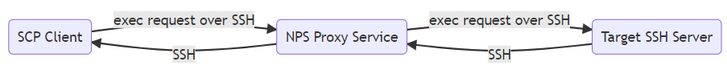

Overview
For versions 4.2 or higher, Netwrix Privilege Secure (NPS) allows the routing and monitoring of SCP and SFTP traffic through the NPS Proxy. Instructions are provided on how to configure traffic monitoring for both protocols, as well as how an end user can launch a DirectConnect SCP or SFTP session. These diagrams provide an overview of how this connection occurs for SCP and SFTP, respectively.

Instructions (SFTP)
- On the NPS server, navigate to \ProgramData\Stealthbits\PAM\ProxyService (on the C: drive by default)
- Open the sbpam_ssh.json file in a text editor, and ensure that "RecordSFTP" exists and is set to "true":
{ "RecordSFTP":true } - Ensure that the file is properly comma separated after your changes have been made, and save it.
- (Optional) Also located in the \ProxyService\ directory is the "sbpam_sftp.json" file. If you wish not to audit certain SFTP operations, you can edit this file to not include them. Again, ensure that the file is properly comma separated before saving it.
{ "auditable_operations": [ "SSH_FXP_READ", "SSH_FXP_WRITE", "SSH_FXP_OPEN", "SSH_FXP_CLOSE", "SSH_FXP_OPENDIR", "SSH_FXP_READDIR", "SSH_FXP_REMOVE", "SSH_FXP_MKDIR", "SSH_FXP_RMDIR", "SSH_FXP_RENAME", "SSH_FXP_NAME" ], "name_limit": 20 } - SFTP connections through the Proxy will now be monitored.
Instructions (SCP)
- On the NPS server, navigate to \ProgramData\Stealthbits\PAM\ProxyService (on the C: drive by default)
- Open the sbpam_ssh.json file in a text editor, and ensure that "RecordExec" exists and is set to "true":
{ "RecordExec":true, "ExecExcludes":["WinSCP:"] } - (Optional) "ExecExcludes" can be added, with any number of strings to be excluded when recording traffic. "WinSCP", for instance, occurs very often during an SCP connection through WinSCP and it is advisable to include it in ExecExcludes.
- Ensure that the file is properly comma separated after your changes have been made, and save it.
- SCP connections through the Proxy will now be monitored.
Instructions (DirectConnect)
In order to launch an SFTP or SCP connection that uses the NPS proxy, a DirectConnect string may be used with your preferred SCP/SFTP capable client. The instructions for determining this string are in the linked documentation. Once the string has been determined, it can be provided to your SFTP/SCP program. In this instance we demonstrate SFTP via WinSCP.
- Launch WinSCP and supply your NPS server in the Host Name field, 4422 as the port, and your DirectConnect string as your user name.
- An authentication banner with the "NPS" ASCII should pop up. Click "Continue".
- You will be prompted for your NPS user's password. Provide it and click "OK".
- You should now have an established WinSCP session. This can be monitored by an NPS user with the Administrator role